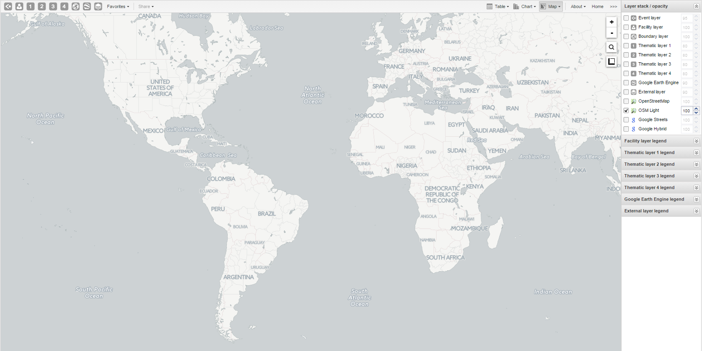

Table of Contents
With the GIS app you can overlay multiple layers and choose among different base maps. You can create thematic maps of areas and points, view facilities based on classifications, and visualize catchment areas for each facility. You can add labels to areas and points, and search and filter using various criteria. You can move points and set locations on the fly. Maps can be saved as favorites and shared with other people.
Here's an overview of the GIS app workspace
|  |
The icons in the top left of the workspace represent the map layers. They are the starting point of the GIS app.
The panel on the right side of the workspace shows an overview of the layers:
The default base map is OSM Light. It's selected by default. If you're online you'll also see OpenStreetMap, Google Streets and Google Hybrid. You can use these maps as background maps and layers. Switch between them by selecting or clearing the checkbox.
If you want to increase or reduce the opacity of a layer, use the up and down arrows for the selected layer.
Use the map legends when you create a thematic map. A legend explains the link between values and colors on your map.
Zoom to content automatically adjusts the zoom level and map center position to put the data on your map in focus.
To view information for an event, simply click the event.
Right-click to display the longitude and latitude of the map.